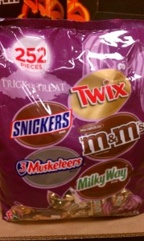

Sugar is four times more addictive than cocaine. It’s more toxic than alcohol and tobacco. Have you noticed all the candy commercials on tv? And the huge displays of candy in the grocery store? And the enormous bowl of tempting … [Read More →]
Comments
I don't know if I entirely agree with this post. While I agree ... by Scensibles Bags
Related Stories
Do Gratitude, Girlfriend | Advice from Guru Lisa Sarick
Buying Bra Her First Bra | Lingerie Advice from Kitty Plum
Just Starting Out? Follow These Basics | Financial Advice from Guru Miata Edoga
 Sugar is four times more addictive than cocaine. It’s more toxic than alcohol and tobacco.
Sugar is four times more addictive than cocaine. It’s more toxic than alcohol and tobacco.
Have you noticed all the candy commercials on tv? And the huge displays of candy in the grocery store? And the enormous bowl of tempting treats on my co-worker’s desk? There are days when I am reasonably sure I gain 10 pounds just by getting up in the morning.
The big problem is that it doesn’t end after the sticky little goblins and ghosts have gone to bed. As Healthy Eating Guru LISA MCDANIEL BROWN points out, it’s the start of Sugar Season (although as far as I’m concerned sugar season goes at least through Valentine’s Day if not longer…
I feeling the urge to not give in this year. To take more control. To not dive headfirst into the bowl of KitKats and M&Ms. To not rationalize that it’s OK to eat Reece’s because they have peanut butter and that is protein. I’m a little afraid of that commitment. I’m afraid I won’t make it. What are your tips for surviving Sugar Season, girlfriend?
Every October when Halloween comes around it marks the unofficial beginning of the holiday season. It’s Halloween, then Thanksgiving, Hanukkah, Christmas, and New Year’s. October also marks the beginning of what I’ve always called the “Sugar Season.”
DUN DUN DUN!
From now until January, you will find SUGAR EVERYWHERE.
First, it’s the Halloween candy – M&M’s, Snickers, Kit Kats, Three Musketeers, and my all-time childhood favorite, Smarties, are just a few of the fabulous, sugary creations you’ll find everywhere from now until the end of the year. Candy is in offices, businesses, grocery stores, your home, your family’s homes — IT’S INESCAPABLE.
Then, a few weeks later, it’s time for Thanksgiving, our annual gorge-fest where we are expected to overeat. To eat until we can’t eat anymore. To eat until it hurts. Then, we wait a little while, and eat some more. Leftovers, yum.
That’s followed by holiday parties – every weekend leading to Hanukkah and Christmas it’s my guess that you have more parties to go to than you have time for. And each of these festivities features lots of food and lots of SUGAR.
WHAT’S A GIRL TO DO?
First of all, prepare. Plan ahead. Know that there is going to be a lot of candy and junk available to you that you should really avoid — and decide not to eat handful after handful. Or plateful after plateful.
If necessary employ the AVOIDANCE technique.
If I have a coworker who always has candy in their office, I find a way to STAY OUT of their office. I’m serious. I’ll email them or pick up the phone rather than have to walk past their bowls of M&M’s, candy corn, and mini Reeses (I’m talking to you Betsy B).
If I’m going to a party, I’ll be sure to eat before I go so I’m not starving when I get there. It makes it much easier to pass on unhealthy choices when I don’t have any room for them.
My best advice for staying away from sugar and unhealthy treats this holiday season is to keep it out of your life, don’t buy it, don’t bring it home, don’t bake sugary treats weekend after weekend, and don’t bring it into the office for your coworkers to share.
Do I sound like a Grinch?? Bah Humbug?
I’m really not a Grinch, I’m just a girl who eats too much sugar (I call it an addiction because once I start I have a hard time stopping, and I crave it).
As a healthy eating coach I know sugar is four times more addictive than cocaine. It’s more toxic than alcohol and tobacco. Yet, we eat it every day, and even worse, we feed it to our kids, in abundance. Happy Holidays!
You don’t have to indulge or overindulge for the next two months just because it’s there. Start your new year’s resolution now and be kind to your body. Feed yourself nutritious veggies, fruits, whole grains, lean meats, legumes, and nuts. And don’t forget to drink lots of water.
Do these things for yourself and you will truly have a happy, holiday season!
LISA MCDANIEL BROWN is a health and nutrition expert, and founder of LMB Health. Before blogging and speaking, Lisa was a broadcaster, PR/Marketing professional, and event planner with a degree in Communications. Her passion for health & well-being was nurtured from an early age – her father was a physician who specialized in weight control and longevity (and he’s still alive and thriving at age 97). Lisa grew up thinking everyone knew how to eat well and live their best life.
AND … JOIN US for our Girlfriend Cruise to Jamaica and Grand Cayman!
By the way, we LOVE guest blogs here at Girlfriendology. Have a great girlfriend story to tell? Want to celebrate your fabulous female friends? SHARE! (And, we also have Girlfriend Gurus – check that out to be featured on Girlfriendology!) SIGN UP for our weekly newsletter and get our FREE eBook ‘30 Days / 30 Ways to Be a Better Friend‘ - check it out!
More to check out – Facebook.com/Girlfriendology and Twitter/@Girlfriendology where we’re connecting with over 50,000 women (we block guys!) and Pinterest.com/Girlfriendology where we share visual inspiration and great quotes. More Girlfriend Friendship Quotes. & Did you see our INFOGRAPHIC on ‘What Women Want‘?
THANKS to our BIG 2012 Sponsor – Biz Stain Fighter and Mean Green Degreaser (check out their coupons!). And – THANKS to YOU Girlfriend!


Comments
- I don't know if I entirely agree with this post. While I agree ... by Scensibles Bags
Related Stories
- Do Gratitude, Girlfriend | Advice from Guru Lisa Sarick
- Buying Bra Her First Bra | Lingerie Advice from Kitty Plum
- Just Starting Out? Follow These Basics | Financial Advice from Guru Miata Edoga